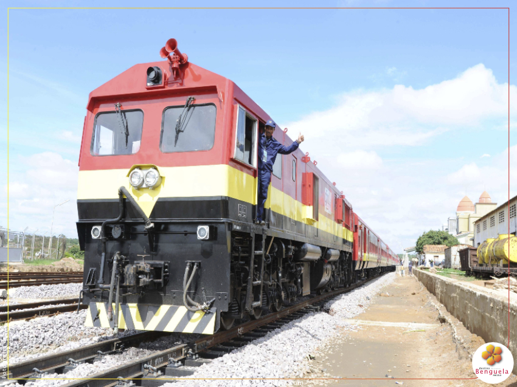

Caminho de Ferro de Benguela (ou CFB) é uma linha ferroviária de Angola.
É também o nome da empresa que a explora, a antiga Companhia do Caminho de Ferro de Benguela SARL. Liga o porto do Lobito, na costa atlântica, à povoação fronteiriça de Luau, na parte oriental do país.
Funcionamento:
O caminho de ferro de Benguela tem uma extensão de 1344 km e dá acesso à parte mais interior do país. Para lá de Luau, encontra-se ligado aos sistemas ferroviários da República Democrática do Congo e da Zâmbia. Através da ligação à Zâmbia, é possível chegar à cidade de Beira, em Moçambique, e a Dar es Salaam, na Tanzânia, junto ao oceano Índico. Também se encontra ligada indirectamente ao sistema ferroviário da África do Sul. Desta forma, o CFB faz parte de uma rede ferroviária transcontinental.
História
Em 1899, o governo português iniciou a construção da ferrovia para dar acesso ao interior e às riquezas minerais do Congo Belga. Após a morte de Cecil Rhodes, em 1902, Robert Williams, um amigo de Rhodes, tomou conta da construção e completou a ligação a Luau, em 1929. A linha mostrou ser um sucesso, revelando-se muito rentável para as potências coloniais, especialmente como constituía o caminho mais curto para transportar as riquezas mineiras do Sul do Congo para a Europa. Em 1931, o porto do Lobitorecebeu por via férrea o primeiro carregamento de cobre proveniente do Catanga. Após a Independência, a Guerra Civil Angolana obrigou à suspensão do funcionamento do CFB, dado que boa parte da sua infraestrutura acabou por ser destruída ou danificada, e que o trânsito era inseguro. Em 1987, numa fase de abrandamento da guerrilha, foi acordado um plano de reconstrução entre as autoridades de Angola e do Zaire, que acabou por não ser levado a cabo por causa de um reacender da guerrilha. Com o advento da paz, em 1991, Angola solicitou um estudo para a reconstrução com a ajuda do Banco Mundial, com vista a retomar o tráfego ferroviário e a potenciar a capacidade do porto do Lobito. Durante o breve período de paz, a ferrovia transportou num ano apenas 157.000 toneladas de materiais, mas conseguiu voltar a funcionar, ainda que apenas em distâncias médias.
O tráfego era então assegurado por 8 locomotivas da General Electric, modelo U20C, 2 Paxman 8RPHXL, 6 de dois motores acoplados Cummins NT855L4, com um total de 22 locomotivas a diesel e mais 19 locomotivas dedicadas a serviços menos importantes. Em 1995, contava com 53 locomotivas (das quais 24 foram adquiridas em segunda mão à África do Sul), 4 vagões restaurantes, 4 vagões com camas e 1761 carruagens. Em Novembro de 2001, a concessão de 99 anos do CFB terminou, passando o caminho-de-ferro a pertencer ao estado angolano, assim como todas as insfraestruturas móveis associadas. Em 2005, foram encetadas conversações entre os governos de Angola e da Zâmbia para retomar o funcionamento. A Chinaforneceu cerca de 500 milhões de dólares de ajuda financeira para ajudar a reconstrução da linha danificada pela guerra. Actualmente, encontra-se em funcionamento entre o Lobito e o Huambo. Em 2009, foi concluída a remoção de engenhos explosivos nesta linha, num esforço conjunto das Forças Armadas Angolanas, Instituto Nacional de Desminagem, Gabinete de Reconstrução Nacional e Polícia de Guarda Fronteira.
Estações Principais:
Lobito, Huambo, Bié, Munhango, Luena, Luau
Dados Estatísticos:
O capital inicial do CFB era de 13 500 000 réis. O CFB possuía a maior plantação privada de eucaliptos do mundo, com uma área de 37 000 hectares. Para gerar vapor para as suas locomotivas, usava cerca de 570 000 toneladas de madeira por ano. Em fins dos anos 60, o CFB empregava cerca de 14 000 trabalhadores, que, em conjunto com as respectivas famílias, representavam cerca de 44 000 pessoas relacionadas com empresa. A linha possuía uma extensão 1345,928 km.
 Lobito, R. Robert Williams, Benguela, AO
Lobito, R. Robert Williams, Benguela, AO
Características:
Video